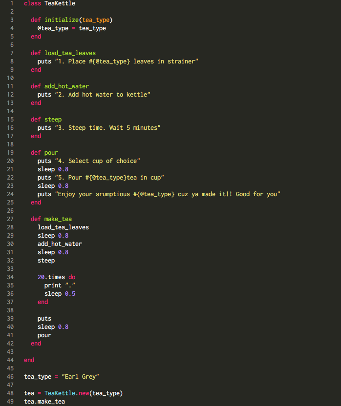
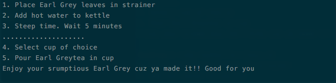

Ruby Classes
Recess is over kids! Time for class
November 5, 2015
Using Classes in Ruby To Get Things Done
It's common to see comparisons made between object-oriented programming (everything in the program is classified as an 'Object') and the real-world, where objects made by the programmer can do things. Objects we see IRL consist of characteristics and behaviors. For example, if you have a tea kettle object, you think of its associated behaviors as 'load tea leaves,' 'add hot water,' 'steep', 'pour.' To simulate a tea kettle in a program you could write a bunch of methods that carry out those functions individually, but it doesn't seem cohesive. This is looking like a *golden* opportunity to make a class called TeaKettle. If we have a class TeaKettle, we can bundle the behaviors mentioned above, simply call the methods on TeaKettle, and our nifty TeaKettle will tell us exactly how to make a soothing cup o' tea. Check it out:

OUTPUT
Let's take a deeper look at this Tea Kettle Class. We've started out by initializing the TeaKettle class by requiring the user to specify a 'tea_type.' That input is taken in as an instance variable, which is a variable that exists solely within a class and is denoted by an '@' sign. By making tea_type an instance variable, we can use that variable freely within the class and interchangeably among methods in that class. You can think of the @tea_type instance variable as a characteristic of the TeaKettle class. You can't, however, use @tea_type outside of the class. You may have noticed tea_type = "Earl Grey" below the class, but that tea_type is a local variable (no '@' sign), and does not interfere with @tea_type INSIDE the class. This distinction has to do with 'scope' of a variable (a topic for another blog post). Next you notice a bunch of methods that describe actions associated with preparing tea in a tea kettle, like load tea leaves, add hot water, steep, and pour. The last method in this sequence is make_tea (line 27). Now what we've done here is combine the above methods into ONE method, called make_tea. By placing the other methods in one method, you can pass related data into a single method, then simply call that one method outside the class to output all the actions. But before you get cranky because you haven't had your morning tea yet, you have to actually create a new TeaKettle class and initialize it. That's done on line 48. Don't forget to add what kind of tea you want by setting the local variable tea_type to your favorite tea (mine's Earl Grey). Call make_tea on that new cup of tea and HAZAH you've got a spankin' cup of tea.